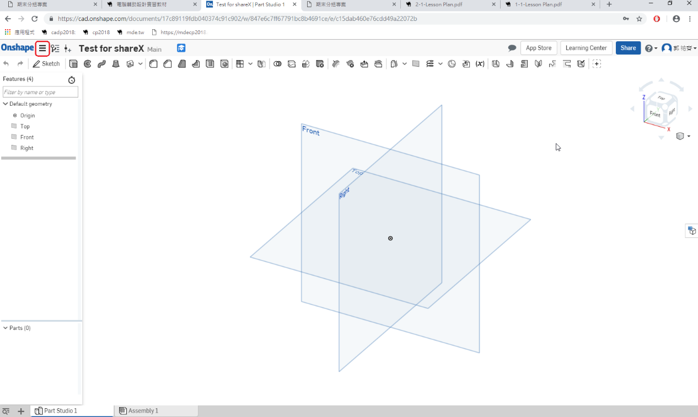
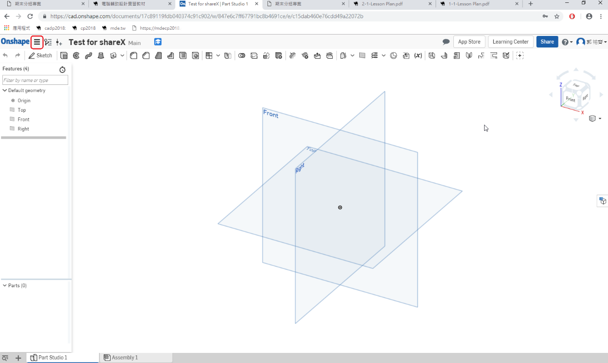
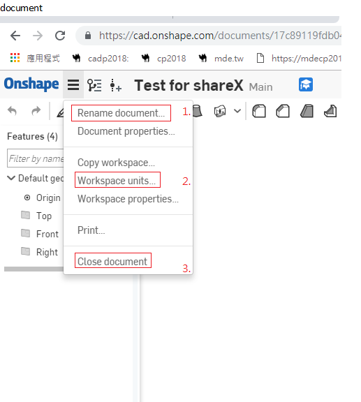
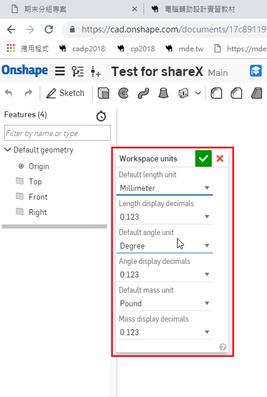

Tutorials
interface
How to creating an Account?

 


- Rename document 文件重新命名
- Workspace unit 操作介面單位
- Close document 關閉文件

工作區單位
1. Default length unit
長度單位
2. Length display decimals
長度顯示小數
3. Default angle unit
角度單位
4. Angle display decimals
角度顯示小數
5. Default mass unit
質量單位
6. Mass display decimals
質量顯示小數
- Move the Graphics Area
移動作圖區

3D 旋轉：點滑鼠右鍵 + 拖移

放大縮小：往前滾動滾輪 -> 放大，往後滾動滾輪 -> 縮小


Geometry
Line ( l ) 線
Corner Rectangle ( g ) 矩形
Center Point Rectangle ( r ) 中心點矩形
Center Point Circle ( c ) 圓
3 Point Circle 3點圓
Ellipse 橢圓
3 Point Arc ( a ) 三點弧
Tangent Arc 切線弧
Center Point Arc 中心點弧
Conic 錐
Inscribed Polygon 內切多邊形
Circumscribed Polygon 外接多邊形
Spline 雲型線
Spline Point 雲型線打點
Point 點
Text 文字
Use ( u ) 投影
Intersection 相交
Construction ( q ) 建構
Sketch Fillet ( Shift - f ) 草圖圓角
Trim ( m ) 修剪
Extend ( x ) 延伸
Slot 直狹槽
Mirror 鏡射
Linear pattern 矩形陣列
constraint
Coincident ( i ) 重合共點
Concentric 同心
Parallel ( b ) 平行
Tangent ( t ) 相切
Horizontal ( h ) 水平
Vertical ( v ) 立式垂直
Perpendicular 交叉垂直
Equal ( e ) 等長.
Midpoint 中點
Normal 垂直
Pierce 貫穿
Symmetric 對稱
Fix 固定
Feature
Extrude 擠出
Revolve 旋轉
Sweep 掃出
Loft 疊層拉伸
Fillet 圓角
OnShape 手冊 << Previous Next >> Fusion 360